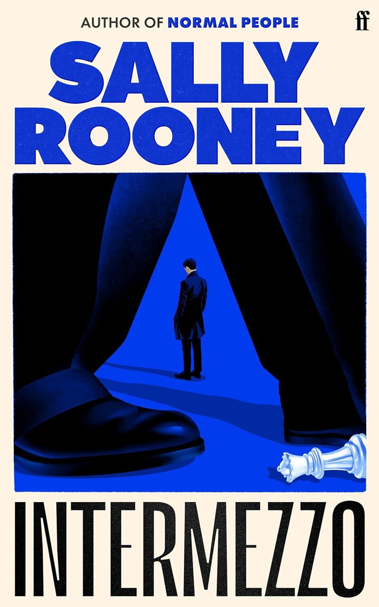

Wandering in the literature world
An exploration of the literature world.
Here are some of my recent articles and translations. I enjoy writing about movies, books and my personal life.
An exploration of the literature world.
I love watching movies at cenima.
Thoughts and feeling when travelling around Europe and Asia.
I am fascinated about cognitive subjects that explores the beauty of the brain, I speak 5 languages and writes about latest research status in lingustics and neuroscience.